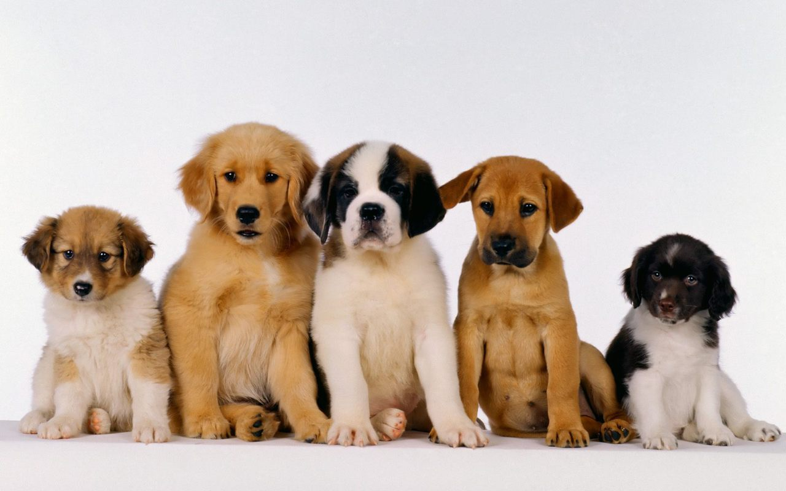

Have you been thinking about getting a pet recently?
A lot of thought goes into the perfect animal for your home. The breed, the money, the training…so many things to think about! One thing that many people don’t consider is the option of adopting a dog or cat instead of buying from a pet store. There are so many benefits to adopting, with the biggest being that you can give an animal an amazing life that they would have never known otherwise! Over 5 million animals are euthanized in shelters each year. If you’d like to take part in changing this, please consider adopting. It’ll be one of the biggest rewards you could’ve ever imagined!
Another benefit in adopting a pet rather than buying from a pet store is that many humane societies or shelters even include microchips and spaying/neutering your pet in the adoption fees. It’s significantly less expensive than buying from a pet store and then having to pay for procedures on your own. Some puppies go for thousands of dollars. Also, many pet stores have sicknesses going around and many of the animals end up getting sick and dying.
Don’t give these corporations your money!
If you’re unsure on whether you want to adopt right away, many humane societies offer volunteering or fostering instead. This allows you to see different temperaments of different animals so that you can see what kind of animal would fit best with your lifestyle. On top of that, you gain a lot of experience and responsibility before jumping into owning a pet.
Click below if you're interesting in visiting the Athens Humane Society website!

| Sunday | Monday | Tuesday | Wednesday | Thursday | Friday | Saturday |
|---|---|---|---|---|---|---|
| 12pm-4pm | 12pm-6pm | 12pm-6pm | 12pm-6pm | 12pm-6pm | 12pm-6pm | 12pm-6pm |